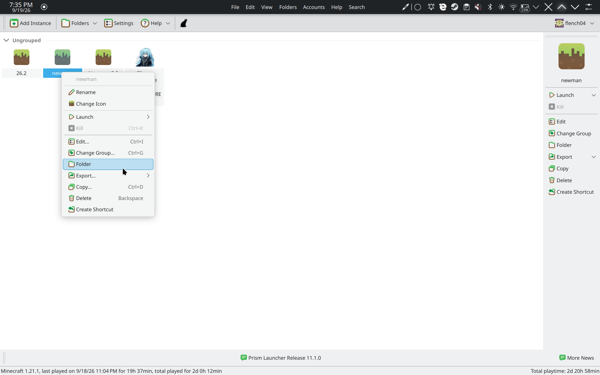
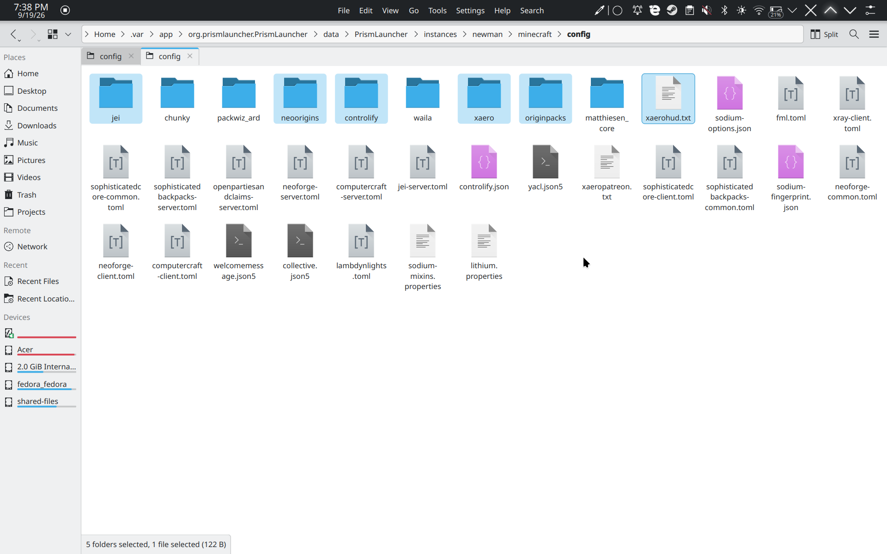

Updating from v1 🔄
Hey guys! So you're coming from the OG Newman Pack? That is so fire! We need to make sure we bring over your epic world and crucial configs so your transition is completely seamless. Let's do this!
Install the New Pack
Follow the Fresh Install Guide to install the brand new Newman2.zip as a new instance. Don't overwrite the old one yet! Keep them side-by-side.
Open Both Instance Folders
In Prism Launcher, right-click your old instance and select "Folder". Do the same for the new instance. Keep both windows open!

Copy Your World (Saves)
In your old instance folder, open the .minecraft directory. Find the saves folder and copy your world over to the new instance's .minecraft/saves folder. Don't lose that hard work!

Copy Important Configs
We need to grab some custom keybinds and essential settings. Copy these specific files from the old .minecraft to the new one:
options.txt(Your keybinds and video settings)journeymapfolder (Keep those waypoints safe!)simplevoicechatconfig folder (If you set up custom mic settings)

Boot it up!
Launch the new Newman Pack instance! Your world should be there, totally blessed and ready to go. See you on the server! 🎮🙏